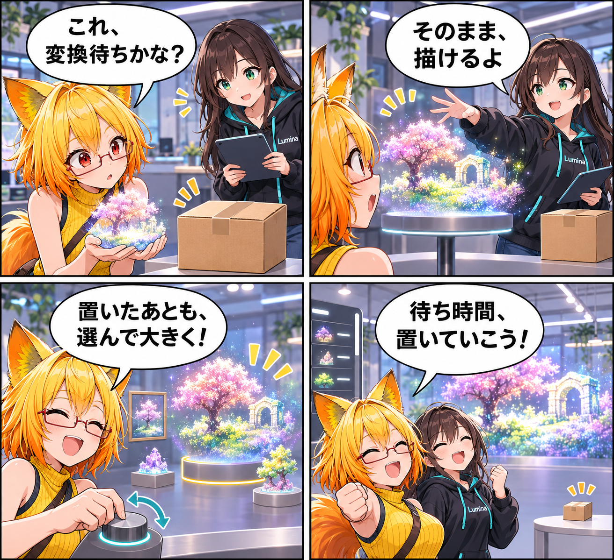

点の景色を、変換せずに置く日
Gaussian PLYを三角形メッシュへ変換せず、背景・静的展示・シーン内アイテムとして直接読み込めるようにしました。
main です。集計終了時点のHEADは aa5c7bc823b013fdfc622ec1d7aa1b85c9da8e5e、期間内コミットは1件でした。MainScene.unity の未コミット差分は期間内に実装された事実を確定できないため、実績には含めていません。
PLYを、そのまま描く
標準3DGS PLYとPlayCanvas圧縮PLYを、元データのまま非同期で読み込み、GPUへ転送して表示します。VABやVBGへ暗黙変換しないため、元のPLYは専用のライブラリフォルダに保持されます。背景、アバターライブラリの静的展示、シーン内アイテムのいずれにも取り込め、ドラッグ＆ドロップとファイル選択の両方で受け付けます。
置いたあとも、大きさを選べる
読み込んだGaussian PLYと通常のシーン内アイテムは、Desktopでは5〜2000%のサイズスライダー、VRでは縮小・拡大・原寸操作で調整できます。読込時のローカルスケールを100%として比率を保ち、選んだアイテムだけを変更します。Desktopの一覧も左側のコンパクトパネルへそろえ、プレビュー領域を残したままサイズの変化を見られるようにしました。
まずは対応範囲を、正確に
バイナリlittle-endianの標準3DGS PLYとPlayCanvas圧縮PLYに対応し、ASCII PLYや通常の点群PLYは対象外です。Gaussianは床や壁の物理Colliderを自動生成せず、静的展示には選択用のBoundsを用意します。骨・モーション・表情もPLYからは生成しません。
検査した範囲
EditModeではGaussian PLYの取込・直接ロード・アイテム登録・URP設定を検査し、GaussianPlyIntegrationTests 11/11、ファイル選択経路のRuntimeFilePickerContentImportTests 7/7、WebP実行時分離のWebPRuntimeIsolationTests 2/2が成功しました。アイテムサイズUIは直接NUnit assertionで確認しています。一方で、大規模PLYの写実的表示、VR HMD両眼、撮影カメラ・鏡での見え方、実機入力操作は未検証です。
4コマの話
今回は「点の景色は、変換しないと置けない？」という思い込みから開始。変換待ちの箱を横に置いたまま、PLYをそのまま呼び込んで、最後は大きさまで選べることに気付く構成にしました。点の集まりを別の形に作り替えず、置き場所と見せ方を増やした一日です。
まとめ
Gaussian PLYを変換せずに読み込み、背景・展示・アイテムとして配置してからも大きさを選べるようにしました。対応形式と未検証範囲を明確に保ちながら、点の景色をVRASの空間へ置ける入口を整えています。